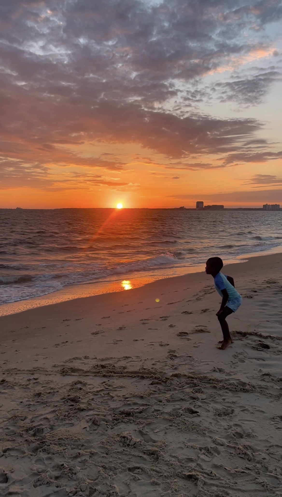
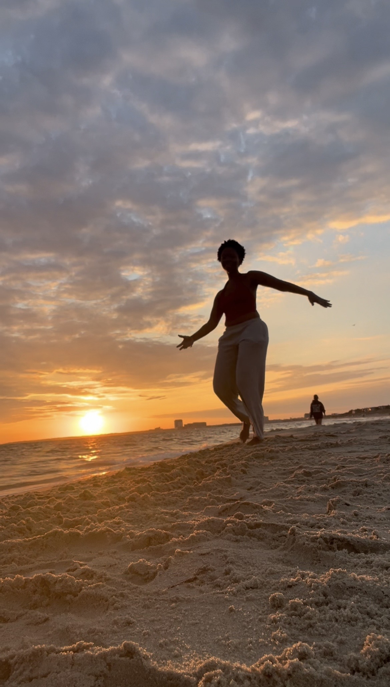

Movement & Creative Experiences
A collection of photographs and moments capturing self-expression, presence, and connection.
Sunrise at the Beach
Movement by the ocean is an opportunity to reconnect with nature, explore freedom of expression, and be present in the moment.


Movement as Self-Expression
These photographs capture moments of movement, creativity, and connection with the body. Each experience is unique, with no choreography or expectations.
Cacao Ceremony
Ceremonial cacao is part of our intentional gatherings, creating space for reflection, community, and mindful connection.
Learn about our upcoming cacao ceremony